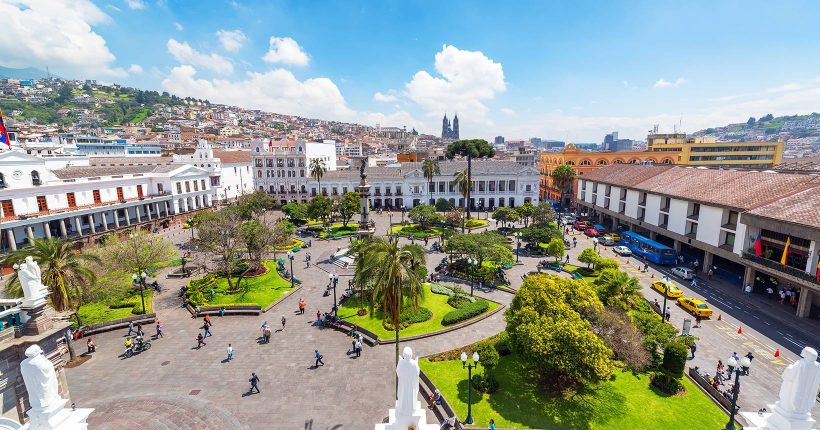

Seja bem vindo ao Equador

Equador, ou República do Equador, é um país sul-americano localizado na região da América Andina. Sua capital é a cidade de Quito. Banhado pelo Oceano Pacífico, o clima equatoriano varia de quente e úmido ao frio de montanha nos terrenos mais elevados, que correspondem à Cordilheira dos Andes. Parte do seu território integra a Bacia do Amazonas, onde se localiza uma parcela da Floresta Amazônica. O país possui 17.888.000 habitantes, maioria dos quais vive nas cidades, e economia baseada na exportação de petróleo e de recursos minerais.
